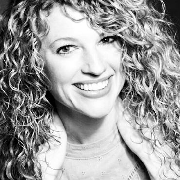

<div class="mdl-cell mdl-cell--12-col mdl-card mdl-shadow--4dp">
    <div class="mdl-grid">
        <div class="mdl-cell mdl-cell--4-col">
            <p></p>
            <h1 class="mdl-card__title-text">Andrea Alaniz</h1>
            <p>Board Member</p>
        </div>
        <div class="mdl-cell mdl-cell--8-col">

            <p>
                Andrea Alaniz is a first time board member for Center Place Christian Theatre, though she has
                had some experience with Theatre both on and off stage.
            </p>
            <p>
                In 2016, Andrea played the role of Becky Thatcher in Blue Springs City Theatre's
                musical production of Tom Sawyer. She has been a props mistress for Center Place
                Restoration School's productions of The Little Mermaid, Peter Pan, and Anne of Green Gables.
                She also did the props along with her husband, Joseph for Center Place Christian Theatre's
                recent production of Mary Poppins.
            </p>
            <p>
                Most recently, Andrea was the music director for Center Place Restoration School's
                production of Singing in the Rain.
            </p>
            <p>
                Andrea is in her fourth year of teaching music at CPRS. She has taught grades K-12,
                and is currently teaching music to Elementary and Middle School students.
                In 2015, Andrea released an album of original music, (which may be found on ITunes),
                and enjoys singing and playing her guitar for a variety of events, when she has time. She keeps
                busy as a mother of three very active children, which happens to be her favorite, and most
                rewarding role.
            </p>

            <h2 class="mdl-typography--headline">Recent Expireince</h2>
            <p>Mary Poppins - Summer 2017<br/>with Center Place Christian Theater</p>
            <p>Singing in the Rain - 2017<br/>with Center Place Restoration School</p>
            <p>Tom Sawyer - 2016<br/>with Blue Springs City Theatre</p>

        </div>
    </div>
</div>